In this chapter, we discuss four kernel components related to device drivers and device management:
• Device types—Classifications used in all Unix systems to unify behavior of common devices
• Modules—The mechanism by which the Linux kernel can load and unload object code on demand
• Kernel objects—Support for adding simple object-oriented behavior and a parent/child relationship to kernel data structures
• Sysfs—A filesystem representation of the system’s device tree
In Linux, as with all Unix systems, devices are classified into one of three types:
• Block devices
• Character devices
• Network devices
Often abbreviated blkdevs, block devices are addressable in device-specified chunks called blocks and generally support seeking, the random access of data. Example block devices include hard drives, Blu-ray discs, and memory devices such as flash. Block devices are accessed via a special file called a block device node and generally mounted as a filesystem. We discuss filesystems in Chapter 13, “The Virtual Filesystem,” and block devices in Chapter 14, “The Block I/O Layer.”
Often abbreviated cdevs, character devices are generally not addressable, providing access to data only as a stream, generally of characters (bytes). Example character devices include keyboards, mice, printers, and most pseudo-devices. Character devices are accessed via a special file called a character device node. Unlike with block devices, applications interact with character devices directly through their device node.
Sometimes called Ethernet devices after the most common type of network devices, network devices provide access to a network (such as the Internet) via a physical adapter (such as your laptop’s 802.11 card) and a specific protocol (such as IP). Breaking Unix’s “everything is a file” design principle, network devices are not accessed via a device node but with a special interface called the socket API.
Linux provides a handful of other device types, but they are specialized to a single task and not common. One exception is miscellaneous devices, often abbreviated miscdevs, which are actually a simplified form of character devices. Miscellaneous devices enable a device driver author to represent simple devices easily, trading functionality for common infrastructure.
Not all device drivers represent physical devices. Some device drivers are virtual, providing access to kernel functionality. We call these pseudo devices; some of the most common are the kernel random number generator (accessible at /dev/random and /dev/urandom), the null device (accessible at /dev/null), the zero device (accessible at /dev/zero), the full device (accessible at /dev/full), and the memory device (accessible at /dev/mem). Most device drivers, however, represent physical hardware.
Despite being “monolithic,” in the sense that the whole kernel runs in a single address space, the Linux kernel is modular, supporting the dynamic insertion and removal of code from itself at runtime. Related subroutines, data, and entry and exit points are grouped together in a single binary image, a loadable kernel object, called a module. Support for modules allows systems to have only a minimal base kernel image, with optional features and drivers supplied via loadable, separate objects. Modules also enable the removal and reloading of kernel code, facilitate debugging, and allow for the loading of new drivers on demand in response to the hot plugging of new devices.
This chapter looks at the magic behind modules in the kernel and how you can write your own module.
Unlike development on core subsystems of the kernel—which is much of the material discussed thus far—module development is more like writing a new application, at least in the sense that modules have entry points and exit points and live in their own files.
It might be cliché, but it would be a travesty to have the opportunity to write a Hello, World! and not capitalize on the occasion. Here is a Hello, World! kernel module:
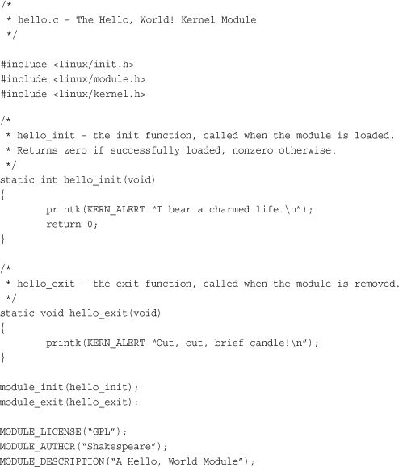
This is as simple a kernel module as one can get. The hello_init() function is registered as this module’s entry point via module_init(). The kernel invokes hello_init() when the module is loaded. The call to module_init()is not actually a function call but a macro that assigns its sole parameter as the initialization function for this module. All init functions must have the form,
int my_init(void);
Because init functions are typically not directly invoked by external code, you don’t need to export the function beyond file-level scope, and it can be marked as static.
Init functions return an int. If initialization (or whatever your init function does) was successful, the function must return zero. On failure, the function must unwind any initialization and return nonzero.
This init function merely prints a simple message and returns zero. In actual modules, init functions register resources, initialize hardware, allocate data structures, and so on. If this file were compiled statically into the kernel image, the init function would be stored in the kernel image and run on kernel boot.
The module_exit() function registers a module’s exit point. In this example, we register the function hello_exit(). The kernel invokes the exit point when the module is removed from memory. Exit functions might free resources, shutdown and reset hardware, and perform other cleanup before returning. Simply put, exit functions are responsible for undoing whatever the init function and lifetime of the module did—essentially cleaning up after the module. After the exit function returns, the module is unloaded.
Exit functions must have the form
void my_exit(void);
As with the init function, you probably want to mark it static.
If this file were compiled into the static kernel image, the exit function would not be included, and it would never be invoked because if it were not a module, the code could never be removed from memory.
The MODULE_LICENSE() macro specifies the copyright license for this file. Loading a non-GPL module into memory results in the tainted flag being set in the kernel. The copyright license serves two purposes. First, it is for informational purposes; many kernel developers give bug reports less credence when the tainted flag is set in an oops, because they presume a binary-only module (that is, a module that they cannot debug) was loaded into the kernel. Second, non-GPL modules cannot invoke GPL-only symbols. We cover GPL-only symbols in the section “Exported Symbols” later in this chapter.
Finally, the MODULE_AUTHOR() and MODULE_DESCRIPTION() macros provide, respectively, the module’s author and a brief description of the module. The value of these macros is entirely informational.
In the 2.6 kernel, building modules is easier than in previous versions, thanks to the new kbuild build system. The first decision in building modules is deciding where the module source is to live. You can add the module source to the kernel source proper, either as a patch or by eventually merging your code into the official tree. Alternatively, you can maintain and build your module source outside the source tree.
Ideally, your module is an official part of Linux and thus lives in the kernel source tree. Getting your work into the kernel proper might require more work at first, but it is the preferred path because when your code is in the Linux kernel, the entire kernel community can help maintain and debug it.
When you decide to place your module in the kernel source tree, the next step is deciding where in the tree your module is to live. Drivers are stored in subdirectories of the drivers/ directory in the root of the kernel source tree. Inside drivers/, class, type, and specific device further organize drivers. For example, drivers for character devices live in drivers/char/, block devices live in drivers/block/, and USB devices live in drivers/usb/. The rules are flexible because many devices belong in multiple categories—for instance, many USB devices are character devices, but they reside in drivers/usb/ not drivers/char/. Despite such complications, when you get the hang of it, the organization is understandable and descriptive.
Let’s assume you have a character device and want to store it in drivers/char/. Inside this directory are numerous C source files and a handful of other directories. Drivers with only one or two source files might simply stick their source in this directory. Drivers with multiple source files or other accompanying data might create a new subdirectory. There is no hard and fast rule. Presume that you want to create your own subdirectory. Let’s further assume that your driver is for a fishing pole with a computer interface, the Fish Master XL 3000, so you need to create a fishing subdirectory inside drivers/char/.
Next, you need to add a line to the Makefile in drivers/char/. So you edit drivers/char/Makefile and add
obj-m += fishing/
This causes the build system to descend into the fishing/ subdirectory whenever it compiles modules. More likely, your driver’s compilation is contingent on a specific configuration option; for example, perhaps CONFIG_FISHING_POLE (see the section “Managing Configuration Options” later in this chapter for how to add a new configuration option). In that case, you would instead add the line
obj-$(CONFIG_FISHING_POLE) += fishing/
Finally, inside drivers/char/fishing/, you add a new Makefile with the following line:
obj-m += fishing.o
The build system now descends into fishing/ and builds the module fishing.ko from fishing.c. Yes, confusingly, you write an extension of .o but the module is compiled as .ko. As before, more likely your fishing pole driver’s compilation is conditional on a configuration option. So you probably want to write the following:
obj-$(CONFIG_FISHING_POLE) += fishing.o
One day, your fishing pole driver might get so complicated—autodetection of fishing line test is just the latest “must have!”—that it grows to occupy more than one source file. No problem, anglers! You simply make your Makefile read the following:
obj-$(CONFIG_FISHING_POLE) += fishing.o
fishing-objs := fishing-main.o fishing-line.o
Now, fishing-main.c and fishing-line.c will be compiled and linked into fishing.ko whenever CONFIG_FISHING_POLE is set.
Finally, you might need to pass to the C compiler additional compile flags during the build process solely for your file. To do so, simply add a line such as the following to your Makefile:
EXTRA_CFLAGS += -DTITANIUM_POLE
If you opted to place your source file(s) in drivers/char/ and not create a new subdirectory, you would merely place the preceding lines (that you placed in your Makefile in drivers/char/fishing/) into drivers/char/Makefile.
To compile, run the kernel build process as usual. If your module’s build was conditioned on a configuration option, as it was with CONFIG_FISHING_POLE, make sure that the option is enabled before beginning.
If you prefer to maintain and build your module outside the kernel source tree, to live the life of an outsider, simply create a Makefile in your own source directory with this single line:
obj-m := fishing.o
This compiles fishing.c into fishing.ko. If your source spans multiple files, two lines will suffice:
obj-m := fishing.o
fishing-objs := fishing-main.o fishing-line.o
This example compiles fishing-main.c and fishing-line.c into fishing.ko.
The main difference in living externally is the build process. Because your module lives outside the kernel tree, you need to instruct make on how to find the kernel source files and base Makefile. This is also easy:
make -C /kernel/source/location SUBDIRS=$PWD modules
In this example, /kernel/source/location is the location of your configured kernel source tree. Recall that you should not store your working copy of the kernel source tree in /usr/src/linux but somewhere else, easily accessible, in your home directory.
Compiled modules are installed into /lib/modules/version/kernel/, where each directory under kernel/ corresponds to the module’s location in the kernel source tree. For example, with a kernel version of 2.6.34, the compiled fishing pole module would live at /lib/modules/2.6.34/kernel/drivers/char/fishing.ko if you stuck it directly in drivers/char/.
The following build command is used to install compiled modules into the correct location:
make modules_install
This needs to be run as root.
The Linux module utilities understand dependencies. This means that module chum can depend on module bait, and when you load the chum module, the module loader automatically loads the bait module. This dependency information must be generated. Most Linux distributions generate the mapping automatically and keep it up to date on each boot. To build the module dependency information, as root simply run
depmod
To perform a quick update, rebuilding only the information for modules newer than the dependency information, run as root
depmod -A
The module dependency information is stored in the file /lib/modules/version/modules.dep.
The simplest way to load a module is via insmod. This utility is basic. It simply asks the kernel to load the module you specify. The insmod program does not perform any dependency resolution or advanced error checking. Usage is trivial. As root, simply run this command:
insmod module.ko
Here, module.ko is the filename of the module that you want to load. To load the fishing pole module, you would run this command as root:
insmod fishing.ko
In a similar fashion, to remove a module, you use the rmmod utility. As root, simply run the following, where module is the name of an already-loaded module:
rmmod module
For example, this command removes the fishing pole module:
rmmod fishing
These utilities, however, are unintelligent. The utility modprobe provides dependency resolution, error checking and reporting, configurable behavior, and more advanced features. Its use is highly encouraged.
To insert a module into the kernel via modprobe, run as root:
modprobe module [ module parameters ]
Here, module is the name of the module to load. Any following arguments are taken as parameters to pass to the module on load. See the section “Module Parameters” for a discussion on module parameters.
The modprobe command attempts to load not only the requested module, but also any modules on which it depends. Consequently, it is the preferred mechanism for loading kernel modules.
The modprobe command can also be used to remove modules from the kernel. To remove a module, as root, run
modprobe –r modules
Here, modules specifies one or more modules to remove. Unlike rmmod, modprobe also removes any modules on which the given module depends, if they are unused. Section 8 of the Linux manual pages provides a reference on its other, less used, options.
An earlier section in this chapter looked at compiling the fishing pole module only if the CONFIG_FISHING_POLE configuration option was set. Configuration options have been discussed in earlier chapters, too, but now let’s look at actually adding a new one, continuing with the fishing pole device driver example.
Thanks to the new “kbuild” system in the 2.6 kernel, adding new configuration options is easy. All you have to do is add an entry to the Kconfig file responsible for the applicable branch of the kernel source tree. For drivers, this is usually the directory in which the source lives. If the fishing pole driver lives in drivers/char/, you use drivers/char/Kconfig.
If you created a new subdirectory and want a new Kconfig file to live there, you need to source it from an existing Kconfig. You do this by adding a line such as the following to an existing Kconfig file:
source "drivers/char/fishing/Kconfig"
In this example, you would add this line to drivers/char/Kconfig.
Entries in Kconfig are easy to add. Our fishing pole module would look like this:
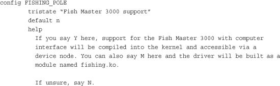
The first line defines what configuration option this entry represents. Note that the CONFIG_ prefix is assumed and not written.
The second line states that this option is a tristate, meaning that it can be built into the kernel (Y), built as a module (M), or not built at all (N). To remove the option of building as a module—say, if this option represented a feature and not a device driver—use the directive bool instead of tristate. The quoted text following the directive provides the name of this option in the various configuration utilities.
The third line specifies the default for this option, which is not built (n). You can also specify the default as built into the kernel (y) or built as a module (m). For device drivers, the default is usually to not build it (n).
The help directive signifies that the rest of the test, indented as it is, is the help text for this entry. The various configuration tools can display this text when requested. Because this text is for developers building their own kernels, it can be succinct and technical. End users do not typically build kernels and, if they did, they could presumably understand the configuration help.
There are other options, too. The depends directive specifies options that must be set before this option can be set. If the dependencies are not met, the option is disabled. For example, if you added the following directive to the Kconfig entry, the device driver could not be enabled (y or m) until the CONFIG_FISH_TANK option is enabled:
depends on FISH_TANK
The select directive is like depends, except that it forces the given option if our option is selected. The select directive should not be used as frequently as depends because it automatically enables other configuration options. The following line enables CONFIG_BAIT whenever CONFIG_FISHING_POLE is enabled:
select BAIT
For both select and depends, you can request multiple options via &&. With depends, you can also specify that an option not be enabled by prefixing the option with an exclamation mark. For example
depends on EXAMPLE_DRIVERS && !NO_FISHING_ALLOWED
This line specifies that the driver depends on CONFIG_EXAMPLE_DRIVERS being set and CONFIG_NO_FISHING_ALLOWED being unset.
The tristate and bool options can be followed by the directive if, which makes the entire option conditional on another configuration option. If the condition is not met, the configuration option is not only disabled but also does not appear in the configuration utilities. For example, this directive instructs the configuration system to display an option only if CONFIG_OCEAN is set. Here, deep sea mode is available only if CONFIG_OCEAN is enabled:
bool "Deep Sea Mode" if OCEAN
The if directive can also follow the default directive, enforcing the default only if the conditional is met.
The configuration system exports several meta-options to help make configuration easier. The option CONFIG_EMBEDDED is enabled only if the users specified that they want to see options designed for disabling key features (presumably to save precious memory on embedded systems). The option CONFIG_BROKEN_ON_SMP is used to specify a driver that is not SMP-safe. Normally this option is not set, forcing the user to explicitly acknowledge the brokenness. New drivers, of course, should not use this flag. The option CONFIG_DEBUG_KERNEL enables the selection of debugging-related options. Finally, the CONFIG_EXPERIMENTAL option is used to flag options that are experimental or otherwise of beta quality. The option defaults to off, again forcing users to explicitly acknowledge the risk before they enable your driver.
The Linux kernel provides a simple framework, enabling drivers to declare parameters that the user can specify on either boot or module load and then have these parameters exposed in your driver as global variables. These module parameters also show up in sysfs (see later in this chapter). Consequently, creating and managing module parameters that can be specified in a myriad of convenient ways is trivial.
Defining a module parameter is done via the macro module_param():
module_param(name, type, perm);
Here, name is the name of both the parameter exposed to the user and the variable holding the parameter inside your module. The type argument holds the parameter’s data type; it is one of byte, short, ushort, int, uint, long, ulong, charp, bool, or invbool. These types are, respectively, a byte, a short integer, an unsigned short integer, an integer, an unsigned integer, a long integer, an unsigned long integer, a pointer to a char, a Boolean, and a Boolean whose value is inverted from what the user specifies. The byte type is stored in a single char and the Boolean types are stored in variables of type int. The rest are stored in the corresponding primitive C types. Finally, the perm argument specifies the permissions of the corresponding file in sysfs. The permissions can be specified in the usual octal format, for example 0644 (owner can read and write, group can read, everyone else can read), or by ORing together the usual S_Ifoo defines, for example S_IRUGO | S_IWUSR (everyone can read; user can also write). A value of zero disables the sysfs entry altogether.
The macro does not declare the variable for you. You must do that before using the macro. Therefore, typical use might resemble
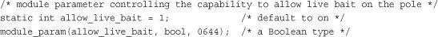
This would be in the outermost scope of your module’s source file. In other words, allow_live_bait is global to the file.
It is possible to have the internal variable named differently than the external parameter. This is accomplished via module_param_named():
module_param_named(name, variable, type, perm);
Here, name is the externally viewable parameter name, and variable is the name of the internal global variable. For example
static unsigned int max_test = DEFAULT_MAX_LINE_TEST;
module_param_named(maximum_line_test, max_test, int, 0);
Normally, you would use a type of charp to define a module parameter that takes a string. The kernel copies the string provided by the user into memory and points your variable to the string. For example
static char *name;
module_param(name, charp, 0);
If so desired, it is also possible to have the kernel copy the string directly into a character array that you supply. This is done via module_param_string():
module_param_string(name, string, len, perm);
Here, name is the external parameter name, string is the internal variable name, len is the size of the buffer named by string (or some smaller size, but that does not make much sense), and perm is the sysfs permissions (or zero to disable a sysfs entry altogether). For example
static char species[BUF_LEN];
module_param_string(specifies, species, BUF_LEN, 0);
You can accept a comma-separated list of parameters stored in a C array via module_param_array():
module_param_array(name, type, nump, perm);
Here, name is again the external parameter and internal variable name, type is the data type, and perm is the sysfs permissions. The new argument, nump, is a pointer to an integer in which the kernel stores the number of entries stored into the array. Note that the array pointed to by name must be statically allocated. The kernel determines the array’s size at compile-time and ensures that it does not cause an overrun. Use is simple. For example
static int fish[MAX_FISH];
static int nr_fish;
module_param_array(fish, int, &nr_fish, 0444);
You can name the internal array something different than the external parameter with module_param_array_named():
module_param_array_named(name, array, type, nump, perm);
The parameters are identical to the other macros.
Finally, you can document your parameters by using MODULE_PARM_DESC():
static unsigned short size = 1;
module_param(size, ushort, 0644);
MODULE_PARM_DESC(size, "The size in inches of the fishing pole.");
All these macros require the inclusion of <linux/module.h>.
When modules are loaded, they are dynamically linked into the kernel. As with user-space, dynamically linked binaries can call only into external functions explicitly exported for use. In the kernel, this is handled via special directives called EXPORT_SYMBOL() and EXPORT_SYMBOL_GPL().
Exported functions are available for use by modules. Functions not exported cannot be invoked from modules. The linking and invoking rules are much more stringent for modules than code in the core kernel image. Core code can call any nonstatic interface in the kernel because all core source files are linked into a single base image. Exported symbols, of course, must be nonstatic, too. The set of exported kernel symbols are known as the exported kernel interfaces.
Exporting a symbol is easy. After the function is declared, it is usually followed by an EXPORT_SYMBOL(). For example
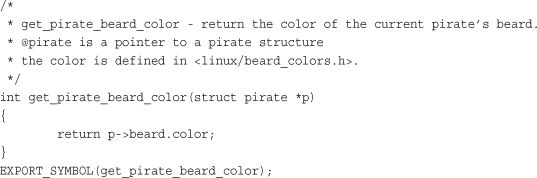
Presuming that get_pirate_beard_color() is also declared in an accessible header file, any module can now access it.
Some developers want their interfaces accessible to only GPL-compliant modules. The kernel linker enforces this restriction through use of the MODULE_LICENSE() directive. If you want the previous function accessible to only modules that labeled themselves as GPL-licensed, use instead
EXPORT_SYMBOL_GPL(get_pirate_beard_color);
If your code is configurable as a module, you must ensure that when compiled as a module all interfaces that it uses are exported. Otherwise linking errors (and a broken module) result.
A significant new feature in the 2.6 Linux kernel is the addition of a unified device model. The device model provides a single mechanism for representing devices and describing their topology in the system. Such a system provides several benefits:
• Minimization of code duplication
• A mechanism for providing common facilities, such as reference counting
• The capability to enumerate all the devices in the system, view their status, and see to what bus they attach
• The capability to generate a complete and valid tree of the entire device structure of the system, including all buses and interconnections
• The capability to link devices to their drivers and vice versa
• The capability to categorize devices by their class, such as input device, without the need to understand the physical device topology
• The capability to walk the tree of devices from the leaves up to the root, powering down devices in the correct order
The initial motivation for the device model was this final point: providing an accurate device tree to facilitate power management. To implement device-level power management in the kernel, you need to build a tree representing the device topology in the system: for example, what drive connects to what controller, and what device connects to what bus. When powering down, the kernel must power down the lower (leaf) nodes of the tree before the higher nodes. For example, the kernel needs to turn off a USB mouse before it turns off the USB controller, and the kernel must power down the USB controller before the PCI bus. To do this accurately and efficiently for the entire system, the kernel needs a tree of devices.
At the heart of the device model is the kobject, short for kernel object, which is represented by struct kobject and defined in <linux/kobject.h>. The kobject is similar to the Object class in object-oriented languages such as C# or Java. It provides basic facilities, such as reference counting, a name, and a parent pointer, enabling the creation of a hierarchy of objects.
Without further ado:
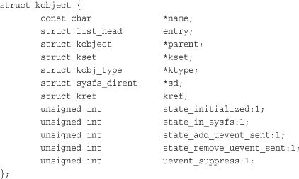
The name pointer points to the name of this kobject.
The parent pointer points to this kobject’s parent. In this manner, kobjects build an object hierarchy in the kernel and enable the expression of the relationship between multiple objects. As you shall see, this is actually all that sysfs is: a user-space filesystem representation of the kobject object hierarchy inside the kernel.
The sd pointer points to a sysfs_dirent structure that represents this kobject in sysfs. Inside this structure is an inode structure representing the kobject in the sysfs filesystem.
The kref structure provides reference counting. The ktype and kset structures describe and group kobjects. We look at them in the next two subsections.
Kobjects are usually embedded in other structures and are generally not interesting on their own. Instead, a more important structure, such as struct cdev, defined in <linux/cdev.h>, has a kobj member:
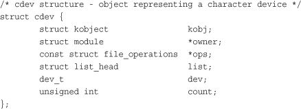
When kobjects are embedded inside other structures, the structures receive the standardized functions that a kobject provides. Most important, the structure’s embedded kobject now enables the structure to become part of an object hierarchy. For example, the cdev structure is presentable in an object hierarchy via the parent pointer cdev->kobj.parent and the list cdev->kobj.entry.
Kobjects are associated with a specific type, called a ktype, short for kernel object type. Ktypes are represented by struct kobj_type and defined in <linux/kobject.h>:
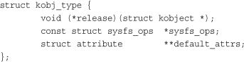
Ktypes have the simple job of describing default behavior for a family of kobjects. Instead of each kobject defining its own behavior, the behavior is stored in a ktype, and kobjects of the same “type” point at the same ktype structure, thus sharing the same behavior.
The release pointer points to the deconstructor called when a kobject’s reference count reaches zero. This function is responsible for freeing any memory associated with this kobject and otherwise cleaning up.
The sysfs_ops variable points to a sysfs_ops structure. This structure describes the behavior of sysfs files on read and write. It’s covered in more detail in the section “Adding Files to sysfs.”
Finally, default_attrs points to an array of attribute structures. These structures define the default attributes associated with this kobject. Attributes represent properties related to a given object. If this kobject is exported to sysfs, the attributes are exported as files. The last entry in the array must be NULL.
Ksets, short for kernel object sets, are aggregate collections of kobjects. Ksets work as the base container class for a set of kernel objects, collecting related kobjects, such as “all block devices,” together in a single place. Ksets might sound similar to ktypes and prompt the question, “Why have both?” Ksets group related kernel objects together, whereas ktypes enable kernel objects (functionally related or not) to share common operations. The distinction is kept to allow kobjects of identical ktypes to be grouped into different ksets. That is, there are only a handful of ktypes, but many ksets, in the Linux kernel.
The kset pointer points at a kobject’s associated kset. ksets are represented by the kset structure, which is declared in <linux/kobject.h>:
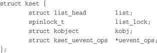
In this structure, list is a linked list of all kobjects in this kset, list_lock is a spinlock protecting this entry in the list (see Chapter 10, “Kernel Synchronization Methods,” for a discussion on spinlocks), kobj is a kobject representing the base class for this set, and uevent_ops points to a structure that describes the hotplug behavior of kobjects in this kset. Uevent, short for user events, is a mechanism for communicating with user-space information about the hotplugging and hot removal of devices from a system.
The handful of structures thus far discussed is confusing not because of their number (there are only three) or their complexity (they are all fairly simple), but because they are all interrelated. In the world of kobjects, it is hard to discuss one structure without discussing the others. With the basics of each structure covered, however, you can develop a firm understanding of their relationships.
The important key object is the kobject, represented by struct kobject. The kobject introduces basic object properties—such as reference counting, parent-child relationship, and naming—to kernel data structures. The kobject structure provides these features in a standard unified way. Kobjects, in and of themselves, are not particularly useful. Instead, kobjects are typically embedded in other data structures, giving those containing structures the features of the kobject.
Kobjects are associated with a specific ktype, which is represented by struct kobj_type and pointed at by the ktype variable inside of the kobject. ktypes define some default properties of related kobjects: destruction behavior, sysfs behavior, and default attributes. The ktype structure is not well named; think of ktypes not as a grouping but as a set of shared operations.
Kobjects are then grouped into sets, called ksets, which are represented by struct kset. Ksets provide two functions. First, their embedded kobject acts as a base class for a group of kobjects. Second, ksets aggregate together related kobjects. In sysfs, kobjects are the individual directories in the filesystem. Related directories—say, perhaps all subdirectories of a given directory—might be in the same kset.
Figure 17.1 depicts the relationship between these data structures.
Figure 17.1. Relationship between kobjects, ksets, and subsystems.
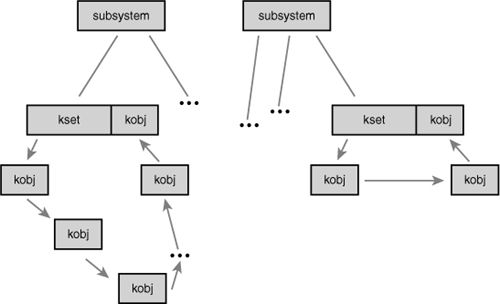
With the basic internals of kobjects and friends behind you, it’s time to look at the exported interfaces used for managing and manipulating kobjects. Most of the time, driver writers do not have to deal with kobjects directly. Instead, kobjects are embedded in some class-specific structure (as you saw with the character device structure) and managed “behind the scenes” by the associated driver subsystem. Nonetheless, kobjects are not intended to remain hidden and can seep through into driver code or you might be hacking on the driver subsystem itself.
The first step in using a kobject is declaring and initializing it. kobjects are initialized via the function kobject_init, which is declared in <linux/kobject.h>:
void kobject_init(struct kobject *kobj, struct kobj_type *ktype);
The function’s first parameter is the kobject to initialize. Before calling this function, the kobject must be zeroed. This might normally happen during the initialization of the larger function in which the kobject is embedded. If not, a simple call to memset()does the trick:
memset(kobj, 0, sizeof (*kobj));
It is safe to initialize parent and kset after the zeroing. For example
struct kobject *kobj;
kobj = kmalloc(sizeof (*kobj), GFP_KERNEL);
if (!kobj)
return -ENOMEM;
memset(kobj, 0, sizeof (*kobj));
kobj->kset = my_kset;
kobject_init(kobj, my_ktype);
This multistep effort is handled automatically by kobject_create(), which returns a newly allocated kobject:
struct kobject * kobject_create(void);
Usage is simple:
struct kobject *kobj;
kobj = kobject_create();
if (!kobj)
return –ENOMEM;
Most uses of kobjects should favor kobject_create() or a related helper function rather than directly manipulate the structure.
One of the primary features provided by kobjects is a unified reference counting system. After initialization, the kobject’s reference count is set to one. So long as the reference count is nonzero, the object continues to exist in memory and is said to be pinned. Any code that holds a reference to the object first elevates the reference count. When the code is finished with the object, the reference count is decremented. Bumping the reference count is called getting a reference to the object, and decrementing the reference count is called putting a reference to the object. When the reference count reaches zero, the object can be destroyed and any associated memory freed.
Incrementing the reference count is done via kobject_get(), declared in <linux/kobject.h>:
struct kobject * kobject_get(struct kobject *kobj);
This function returns a pointer to the kobject or NULL on failure.
Decrementing the reference count is done via kobject_put(), also declared in <linux/kobject.h>:
void kobject_put(struct kobject *kobj);
If the provided kobject’s reference count reaches zero, the release function pointed at by the ktype associated with the kobject is invoked, any associated memory is freed, and the object is no longer valid.
Internally, the kobject reference counting is provided by the kref structure, which is defined in <linux/kref.h>:
struct kref {
atomic_t refcount;
};
The lone member is an atomic variable used to hold the reference count. A structure is used simply to provide type checking. Before using a kref, you must initialize it via kref_init():
void kref_init(struct kref *kref)
{
atomic_set(&kref->refcount, 1);
}
As you can see, this function simply initializes the internal atomic_t to one. Consequently, krefs are pinned with a reference count of one as soon as they are initialized; this is the same behavior as kobjects.
To obtain a reference to a kref, use kref_get(), declared in <linux/kref.h>:
void kref_get(struct kref *kref)
{
WARN_ON(!atomic_read(&kref->refcount));
atomic_inc(&kref->refcount);
}
This function bumps the reference count. It has no return value. To drop a reference to a kref, use kref_put(), declared in <linux/kref.h>:
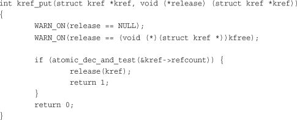
This function drops the reference count by one and calls the provided release() function if the count is now zero. As noted by the ominous WARN_ON() statement, the provided release() function cannot simply be kfree() but must be a specialized function that accepts struct kref as its lone argument and has no return value. The function returns zero, unless the put reference was the last reference to the object, in which case it returns one. Normally, callers of kref_put() are unconcerned with the return value.
Rather than having kernel code implement its own reference counting via atomic_t types and simple “get” and “put” wrapper functions, developers are encouraged to use the kref type and its helpers to provide a common and known-correct reference counting mechanism in the kernel.
All these functions are defined in lib/kref.c and declared in <linux/kref.h>.
The sysfs filesystem is an in-memory virtual filesystem that provides a view of the kobject hierarchy. It enables users to view the device topology of their system as a simple filesystem. Using attributes, kobjects can export files that enable kernel variables to be read from and optionally written to.
Although the intended purpose of the device model was initially to provide a device topology for power management reasons, an offshoot was sysfs. To facilitate debugging, the device model’s developer decided to export the tree as a filesystem. This quickly proved quite useful, at first as a replacement for device-related files that previously found themselves in /proc, and later as a powerful view into the system’s object hierarchy. Indeed, sysfs, originally called driverfs, predated kobjects. Eventually sysfs made it clear that a new object model would be quite beneficial, and kobject was born. Today, every system with a 2.6 kernel has sysfs. Most systems mount it at /sys.
The magic behind sysfs is simply tying kobjects to directory entries via the dentry member inside each kobject. Recall from Chapter 12 that the dentry structure represents directory entries. By linking kobjects to dentries, kobjects trivially map to directories. Exporting the kobjects as a filesystem is now as easy as building a tree of the dentries in memory. But wait! kobjects already form a tree, our beloved device model. With kobjects mapping to dentries and the object hierarchy already forming an in-memory tree, sysfs became trivial.
Figure 17.2 is a partial view of the sysfs filesystem as mounted at /sys.
Figure 17.2. A partial view of the /sys tree.
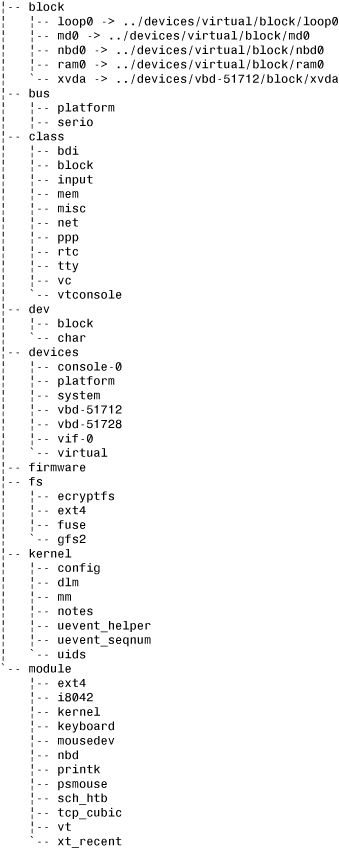
The root of the sysfs contains at least 10 directories: block, bus, class, dev, devices, firmware, fs, kernel, module, and power. The block directory contains one directory for each of the registered block devices on the system. Each of those directories, in turn, contains any partitions on the block device. The bus directory provides a view of the system buses. The class directory contains a view of the devices on the system organized by high-level function. The dev directory is a view of registered device nodes. The devices directory is a view of the device topology of the system. It maps directly to the hierarchy of device structures inside the kernel. The firmware directory contains a system-specific tree of low-level subsystems such as ACPI, EDD, EFI, and so on. The fs directory contains a view of registered filesystems. The kernel directory contains kernel configuration options and status information while the modules directory contains a view of the system’s loaded modules. The power directory contains systemwide power management data. Not all systems have all directories and yet other systems have directories not mentioned here.
The most important directory is devices, which exports the device model to the world. The directory structure is the actual device topology of the system. Much of the data in other directories is simply alternative organizations of the data in the devices directory. For example, /sys/class/net/ organizes devices by the high-level concept of registered network interfaces. Inside this directory might be the subdirectory eth0, which contains the symlink device back to the actual device directory in devices.
Take a look at /sys on a Linux system that you have access to. Such an accurate view into the system’s device is neat, and seeing the interconnection between the high-level concepts in class versus the low-level physical devices in devices and the actual drivers in bus is informative. The whole experience is even more rewarding when you realize that this data is provided free, as a side effect of the kernel maintaining a device hierarchy, and that this is the representation of the system as maintained inside the kernel.1
1 If you find sysfs interesting, you might be interested in HAL, a hardware abstraction layer, which can be found at http://www.freedesktop.org/wiki/Software/hal. HAL builds an in-memory database based on the data in sysfs, linking together the concepts of class, device, and driver. On top of this data, HAL provides a rich API enabling for smarter, more hardware-aware applications.
Initialized kobjects are not automatically exported to sysfs. To represent a kobject to sysfs, you use kobject_add():
int kobject_add(struct kobject *kobj, struct kobject *parent, const char *fmt, ...);
A given kobject’s location in sysfs depends on the kobject’s location in the object hierarchy. If the kobject’s parent pointer is set, the kobject maps to a subdirectory in sysfs inside its parent. If the parent pointer is not set, the kobject maps to a subdirectory inside kset->kobj. If neither the parent nor the kset fields are set in the given kobject, the kobject is assumed to have no parent and maps to a root-level directory in sysfs. In most use cases, one or both of parent and kset should be set appropriately before kobject_add() is called. Regardless, the name of the directory representing the kobject in sysfs is given by fmt, which accepts a printf()-style format string.
The helper function kobject_create_and_add() combines the work of kobject_create() and kobject_add() into one function:
struct kobject * kobject_create_and_add(const char *name, struct kobject *parent);
Note that kobject_create_and_add() receives the name of the kobject’s directory as a direct pointer, name, while kobject_add() uses printf()-style formatting.
Removing a kobject’s sysfs representation is done via kobject_del():
void kobject_del(struct kobject *kobj);
All of these functions are defined in lib/kobject.c and declared in <linux/kobject.h>.
Kobjects map to directories, and the complete object hierarchy maps nicely to the complete sysfs directory structure, but what about files? Sysfs is nothing but a pretty tree without files to provide actual data.
A default set of files is provided via the ktype field in kobjects and ksets. Consequently, all kobjects of the same type have the same default set of files populating their sysfs directories. The kobj_type structure contains a member, default_attrs, that is an array of attribute structures. Attributes map kernel data to files in sysfs.
The attribute structure is defined in <linux/sysfs.h>:
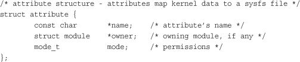
The name member provides the name of this attribute. This will be the filename of the resulting file in sysfs. The owner member points to a module structure representing the owning module, if any. If a module does not own this attribute, this field is NULL. The mode member is a mode_t type that specifies the permissions for the file in sysfs. Read-only attributes probably want to set this to S_IRUGO if they are world-readable and S_IRUSR if they are only owner-readable. Writable attributes probably want to set mode to S_IRUGO | S_IWUSR. All files and directories in sysfs are owned by uid zero and gid zero.
Although default_attrs lists the default attributes, sysfs_ops describes how to use them. The sysfs_ops member is a pointer to a structure of the same name, which is defined in <linux/sysfs.h>:
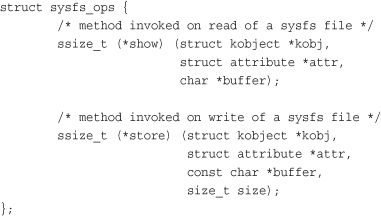
The show() method is invoked when the sysfs entry is read from user-space. It must copy the value of the attribute given by attr into the buffer provided by buffer. The buffer is PAGE_SIZE bytes in length; on x86, PAGE_SIZE is 4096 bytes. The function should return the size in bytes of data actually written into buffer on success or a negative error code on failure.
The store() method is invoked on write. It must read the size bytes from buffer into the variable represented by the attribute attr. The size of the buffer is always PAGE_SIZE or smaller. The function should return the size in bytes of data read from buffer on success or a negative error code on failure.
Because this single set of functions must handle file I/O requests on all attributes, they typically need to maintain some sort of generic mapping to invoke a handler specific to each attribute.
Generally, the default attributes provided by the ktype associated with a kobject are sufficient. Indeed, the purpose of ktype is to provide common operations to kobjects. Sharing ktypes between kobjects not only simplifies programming, but also provides code consolidation and a uniform look and feel to sysfs directories of related objects.
Nonetheless, often some specific instance of a kobject is somehow special. It wants or even needs its own attributes—perhaps to provide data or functionality not shared by the more general ktype. To this end, the kernel provides the sysfs_create_file() interface for adding new attributes on top of the default set:
int sysfs_create_file(struct kobject *kobj, const struct attribute *attr);
This function associates the attribute structure pointed at by attr with the kobject pointed at by kobj. Before it is invoked, the given attribute should be filled out. This function returns zero on success and a negative error code otherwise.
Note that the sysfs_ops specified in the kobject’s ktype is invoked to handle this new attribute. The existing default show() and store() methods must be capable of handling the newly created attribute.
In addition to creating actual files, it is possible to create symbolic links. Creating a symlink in sysfs is easy:
int sysfs_create_link(struct kobject *kobj, struct kobject *target, char *name);
This function creates a link named name in the directory mapped from kobj to the directory mapped from target. This function returns zero on success and a negative error code otherwise.
Removing an attribute is handled via sysfs_remove_file():
void sysfs_remove_file(struct kobject *kobj, const struct attribute *attr);
Upon call return, the given attribute no longer appears in the given kobject’s directory.
Symbolic links created with sysfs_create_link() can be removed with sysfs_remove_link():
void sysfs_remove_link(struct kobject *kobj, char *name);
Upon return, the symbolic link name in the directory mapped from kobj is removed.
All four of these functions are declared in <linux/kobject.h>. The sysfs_create_file() and sysfs_remove_file() functions are defined in fs/sysfs/file.c. The sysfs_create_link() and sysfs_remove_link() functions are defined in fs/sysfs/symlink.c.
The sysfs filesystem is currently the place for implementing functionality previously reserved for ioctl() calls on device nodes or the procfs filesystem. Instead of these deprecated kernel interfaces, today kernel developers implement such functionality as sysfs attributes in the appropriate directory. For example, instead of a new ioctl() on a device node, add a sysfs attribute in the driver’s sysfs directory. Such an approach avoids the type-unsafe use of obscure ioctl() arguments and the haphazard mess of /proc.
To keep sysfs clean and intuitive, however, developers must follow certain conventions. First, sysfs attributes should export one value per file. Values should be text-based and map to simple C types. The goal is to avoid the highly structured or highly messy representation of data we have today in /proc. Providing one value per file makes reading and writing trivial from the command line and enables C programs to easily slurp the kernel’s data from sysfs into their own variables. In situations in which the one-value-per-file rule results in an inefficient representation of data, it is acceptable to place multiple values of the same type in one file. Delineate them as appropriate; a simple space probably makes the most sense. Ultimately, think of sysfs attributes as mapping to individual kernel variables (as they usually do), and keep in mind ease of manipulation from user-space, particularly from the shell.
Second, organize data in sysfs in a clean hierarchy. Correctly parent kobjects so that they map intuitively into the sysfs tree. Associate attributes with the correct kobject and keep in mind that the kobject hierarchy exists not only in the kernel, but also as an exported tree to user-space. Keep the sysfs tree organized and hierarchical.
Finally, remember that sysfs provides a kernel-to-user service and is thus a sort of user-space ABI. User programs can rely on the existence, location, value, and behavior of sysfs directories and files. Changing existing files in any way is discouraged, and modifying the behavior of a given attribute but keeping its name and location is surely begging for trouble.
These simple conventions should enable sysfs to provide a rich and intuitive interface to user-space. Use sysfs correctly and user-space developers can have a simple and clean, yet powerful and intuitive, interface to the kernel.
The Kernel Event Layer implements a kernel-to-user notification system on top of kobjects. After the release of 2.6.0, it became clear that a mechanism for pushing events out of the kernel and up into user-space was needed, particularly for desktop systems that needed a more integrated and asynchronous system. The idea was to have the kernel push events up the stack: Hard drive full! Processor is overheating! Partition mounted!
Early revisions of the event layer came and went, and it was not long before the whole thing was tied intimately to kobjects and sysfs. The result, it turns out, is pretty neat. The Kernel Event Layer models events as signals emitting from objects—specifically, kobjects. Because kobjects map to sysfs paths, the source of each event is a sysfs path. If the event in question has to do with your first hard drive, /sys/block/hda is the source address. Internally, inside the kernel, we model the event as originating from the backing kobject.
Each event is given a verb or action string representing the signal. The strings are terms such as modified or unmounted that describe what happened.
Finally, each event has an optional payload. Rather than pass an arbitrary string to user-space that provides the payload, the kernel event layer represents payloads as sysfs attributes.
Internally, the kernel events go from kernel-space out to user-space via netlink. Netlink is a high-speed multicast socket that transmits networking information. Using netlink means that obtaining kernel events from user-space is as simple as blocking on a socket. The intention is for user-space to implement a system daemon that listens on the socket, processes any read events, and transmits the events up the system stack. One possible proposal for such a user-space daemon is to tie the events into D-BUS,2 which already implements a systemwide messaging bus. In this manner, the kernel can emit signals just as any other component in the system.
2 More information on D-BUS is available at http://dbus.freedesktop.org/.
To send events out to user-space from your kernel code, use kobject_uevent():
int kobject_uevent(struct kobject *kobj, enum kobject_action action);
The first parameter specifies the kobject emitting this signal. The actual kernel event contains the sysfs path to which this kobject maps.
The second parameter specifies the action or verb describing this signal. The actual kernel event contains a string that maps to the provided enum kobject_action value. Rather than directly provide the string, the function uses an enumeration to encourage value reuse, provide type safety, and prevent typos and other mistakes. The enumerations are defined in <linux/kobject.h> and have the form KOBJ_foo. Current values include KOBJ_MOVE, KOBJ_ONLINE, KOBJ_OFFLINE, KOBJ_ADD, KOBJ_REMOVE, and KOBJ_CHANGE. These values map to the strings “move,” “online,” “offline,” “add,” “remove,” and “change,” respectively. Adding new action values is acceptable, so long as an existing value is insufficient.
Using kobjects and attributes not only encourages events that fit nicely in a sysfs-based world, but also encourages the creation of new kobjects and attributes to represent objects and data not yet exposed through sysfs.
This and related functions are defined in lib/kobject_uevent.c and declared in <linux/kobject.h>.
In this chapter, we looked at the kernel functionality used to implement device drivers and manage the device tree, including modules, kobjects (and the related ksets and ktypes), and sysfs. This functionality is important to device driver authors because it enables them to write modular, advanced drivers.
In the final three chapters, we switch the discussion from specific Linux kernel subsystems to general kernel issues, starting in the next chapter with a treatment on debugging the Linux kernel.